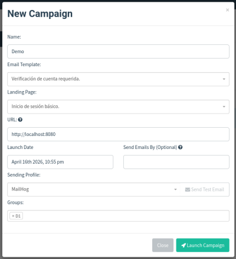
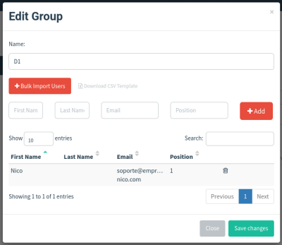
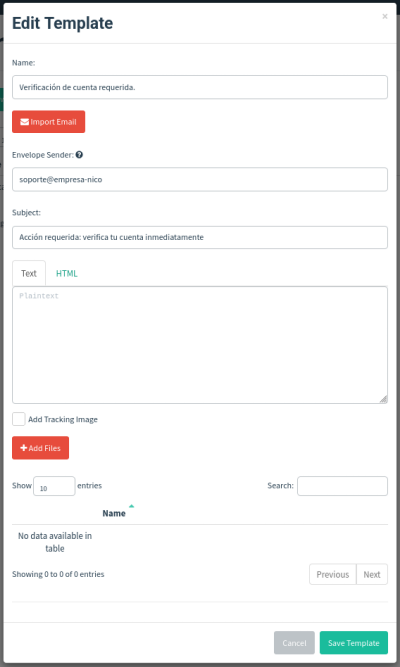
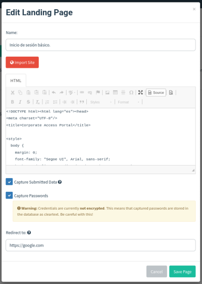
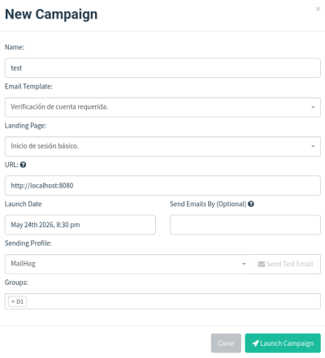

Uso Personal - Caps - Gophish
Cada imágen es la config de la prueba inicial que hice por primera vez de forma local junto a la herramienta MailHog.
Índice.
Una vez vuelvas aquí desde abajo del todo, solo tienes que rellenar todos los huecos que falten sin equivocarte en la URL, porque es la zona que más problemas te va a dar a la hora de configurar, como en este caso recomiendo usar el puesto 8080:8080.

Aquí añades a la gente que quieras enviar el correo; añadiendo nombre, apellido y correo.

3. Página del Phishing. Código
En este paso vas a hacer la página que va a ver la persona a la que le mandemos el ataque.

4. Landing Page. Código
En este paso vas a hacer la página que va a ver la persona a la que le mandemos el ataque.
Teniendo en cuenta que vas a dejar activadas las siguientes opciones:
"☑ Capture Submited Data"
"☑ Capture Passwords"

Por último configuramos la forma en la que enviaremos los correos, en mi caso puse un nombre según mi herramienta. Y de correo simplemente puedes inventarte uno y acabar añadiendo el puerto local que al iniciar nuestra herramienta de pentesting hemos declarado para que escuche.

Ahora solo queda que vuelvas al punto 1 y acabes de rellenar la información faltante.